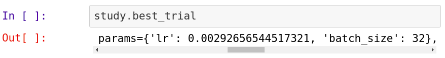
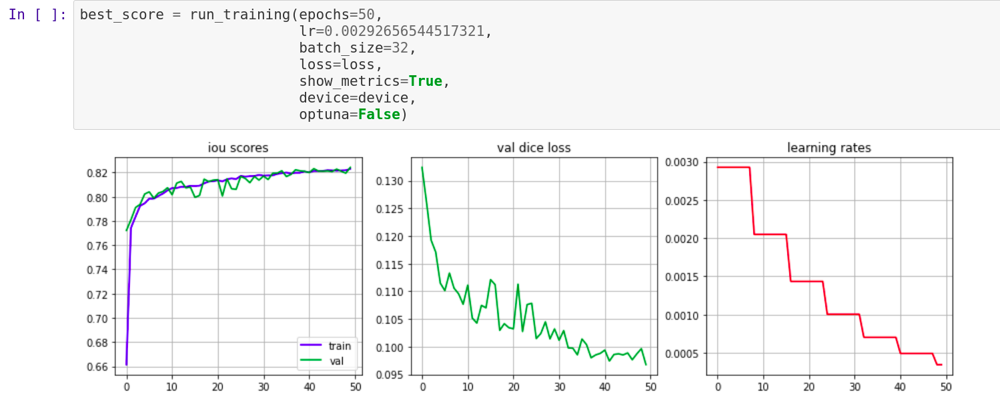
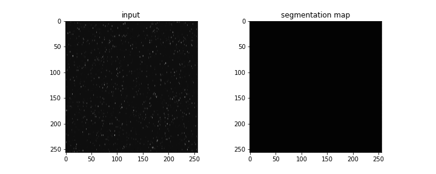
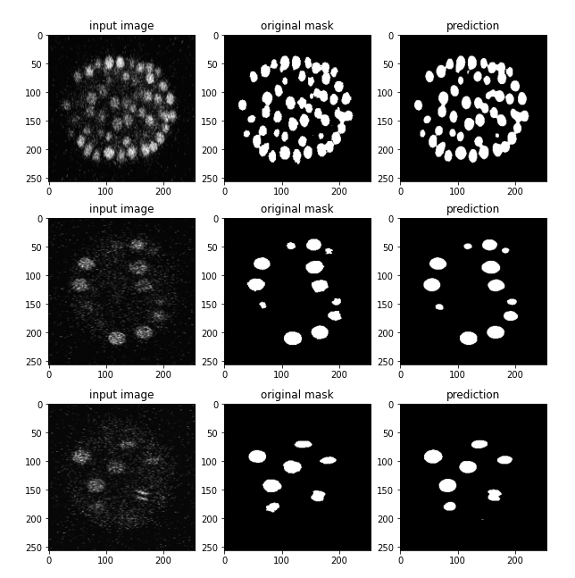

GSoC - Coding Period Week 5
Work Done This Week (July 5th to July 12th)
- Refactored the training loop for the nucleus segentation model, this enabled faster prototyping and experimentation.
- Integrated Optuna for automated hyperparameter optimization. Ran 200 optuna trials to find training hyperparams.
- Optuna samples hyperparams from a given range, which in this case was -
- Learning rate: 0.5e-3 to 20e-3
- Batch Size: 8 to 64
- Each trial trained the model on 10% of available data for 3 epochs, and returned the resulting IOU score.
- The hyperparams from the best optuna trial is shown in the image below

- As a recap, the model details are :
- Type - Feature Pyramid Network
- Backbone - ResNet-18
- Trained the model for 50 epochs, the training metrics are showcased below.

- The model seems to perform well, even when the inputs are super noisy/underexposed. The GIF below shows model predictions on 2D slices of 3D data at one point in time.

- More inference examples:

Planned:
- Build a GUI for the online demo.
- Add this model to the DevoLearn library.
- Swap out the existing DevoLearn cell membrane segmentation model with the new upgraded model.